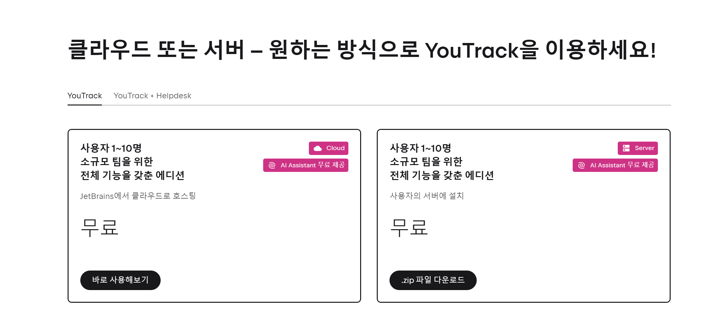
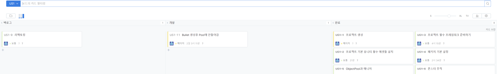
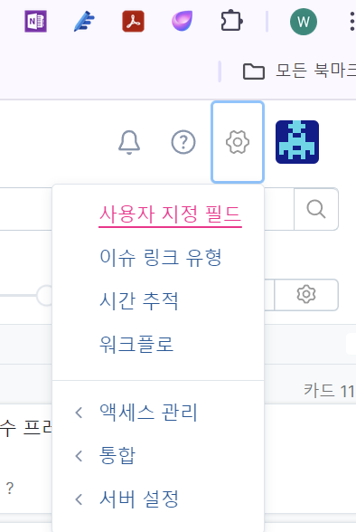
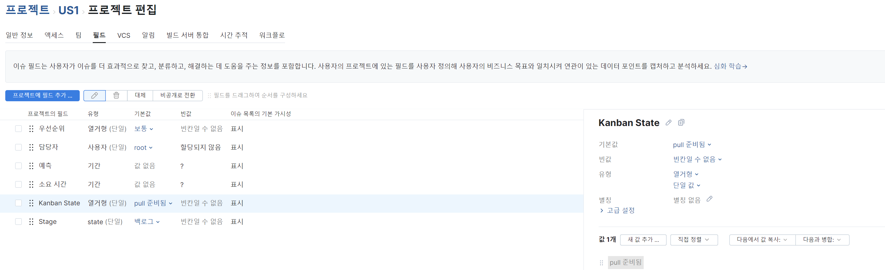
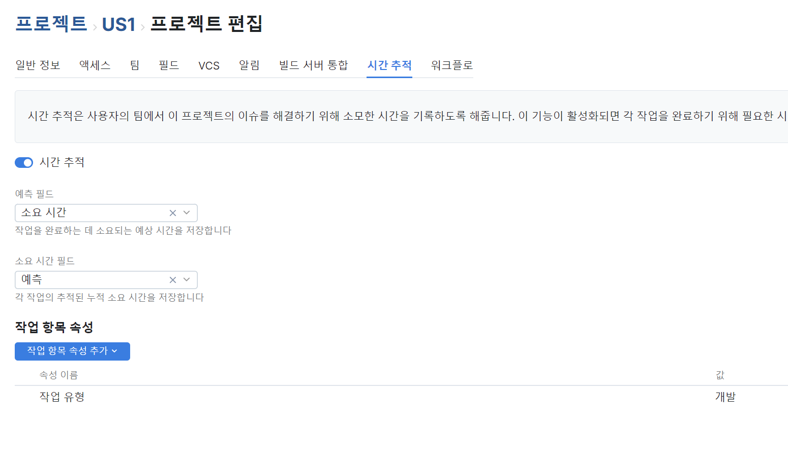

YouTrack 기본 사용법
- 시작
회원가입후 클라우드 또는 자체 서버호스팅 중에 선택하면 됩니다.
10명이하는 무료입니다.
클라우드는 설치없이 설정만 하면 바로 사용할 수 있습니다.

- 프로젝트 설정
칸반/스크럼등 몇가지 보드 스타일이 있으므로 원하시는 것을 선택하십시요.
아래는 칸반 보드입니다.
 새 이슈를 만들면 백로그에 카드가 들어가게 되는것으로 시작됩니다.
- 편의성을 위한 설정 사용자 지정 필드 (아이콘 옆의 톱니바퀴)
 필드에 Kanban State 선택후 오른쪽 화면에서 pull 준비됨을 제외하고 차단됨을 삭제합니다.
이유는 칸반 다음 단계를 카드를 옮기려면 <차단됨 -> pull 준비됨> 상태 변화 지정이 필수인데 귀찮습니다.
Stage 도 마찬가지로 불필요한 필드는 삭제 합니다.
개인적으로 백로그 -> 개발 -> 완료 3가지만 사용합니다.
우선순위도 상태를 축소해서 사용합니다.

- 시간 추적도 활성화 시켜줍니다.
이는 소요시간을 자동으로 체크해줍니다.
나중에 에디터와 연동이 가능하므로 설정을 해줍니다.

YouTrack 작업 간략 흐름도
Last modified: 16 October 2024